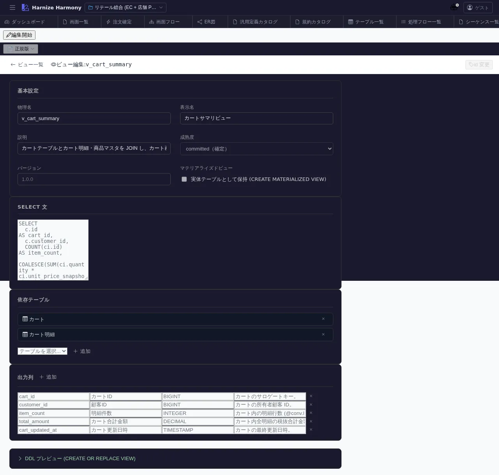

DB ビュー編集
対象画面:
ViewEditor(frontend/src/components/view/ViewEditor.tsx) ルート:/w/:wsId/view/edit/:viewId種別: マルチインスタンスタブ
概要
DB ビュー (CREATE VIEW) を 1 件編集する。複数テーブルを join した projection や、業務ロジックを含む集計を定義し、/generate-code の DDL 生成対象にする。ViewDefinition (画面 projection) とは別物。
到達経路
- DB ビュー一覧 (
/view/list) → 行クリック - 直接 URL:
/w/<wsId>/view/edit/<viewId>
画面構成

主要エリア
- EditorHeader — ビュー名 + id 変更 + 保存
- 基本情報 — 名前 / 論理名 / 説明 / source tables 一覧 / 成熟度
- カラム定義 — view の出力カラム (名前 / 型 / 由来 source column / 計算式) 一覧
- SQL preview — 設定から生成される SELECT 文プレビュー (dialect 中立)
主要操作
| 操作 | 手段 | 結果 |
|---|---|---|
| カラム追加 | 「カラムを追加」 | source column 指定 or 式入力 |
| join 追加 | 「source 追加」 | 別 table を結合 (join type + on 条件) |
| WHERE 条件 | 「filter」セクション | 行絞込み条件を式言語で書く |
| SQL preview 更新 | 自動 | 設定変更時に preview 再生成 |
| 保存 / 破棄 | Ctrl+S / 「破棄」 | edit-session 経由 |
| rename | EditorHeader の id 変更 | RenameEntityDialog |
データ前提
- 新規: source tables 0 件、最低 1 source 選択から開始
- 意味のある状態: retail の
cart-summary-viewは cart + cart-item を join して合計金額カラムを含む
関連仕様書
docs/spec/process-flow-expression-language.md— view 定義内の式docs/spec/view-definition.md— 画面 projection (本画面とは別物) との違い
関連 skill
/generate-code—CREATE VIEWDDL を techStack に従い dialect 翻訳して生成
既知の制約・注意
- DB ビュー (本画面) と ViewDefinition (
view-definition-editor) を混同しない - ビューを参照する process-flow / table がある場合、削除前に必ず参照解消すること
- 集計関数 (
SUM/COUNT等) は GROUP BY 暗黙推定 をしないので明示指定が必要